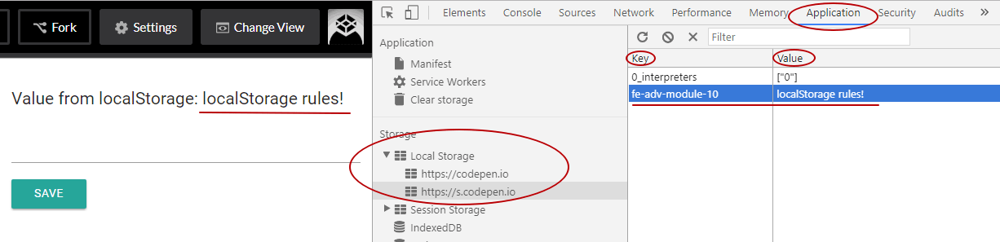

1. Вступ
Основна проблема веб-додатків — при використанні програми та закритті, її стан буде скинуто під час наступного відвідування. Якщо ви закриваєте додаток на робочому столі й знову відкриваєте його, останній стан відновлюється.
Ось чому, як розробнику, вам потрібно десь зберегти стан свого інтерфейсу або дані, які необхідно запам'ятати між відвідинами сторінки. На допомогу приходить зберігання інформації про стан програми на комп'ютері користувача, в браузері.
2. Cookies
Класичний спосіб зберігання інформації на клієнті - це використовувати
кукі-файл розміщений на комп'ютері користувача. Кукі - це текстові рядки
списку пар ключ=значення розділені крапкою з комою. Зазвичай кукі приходять
від сервера і дозволяють зберігати прості рядкові дані.
Але у кукі є кілька обмежень.
- Вони додаються до кожного запиту на сервер, що може бути зайвим
- Кукі дозволяють зберігати всього до 4Кб даних, що досить мало
- Оскільки кукі використовуються для відстеження поведінки людей в серфінгу,
користувачі часто відключають їх, а сайти просять кожен раз потрібно їх
встановлювати - Використовуючи кукі, досить проблематично відстежувати дві або більше транзакцій на одному і тому ж сайті, що може відбуватися одночасно в різних вкладках
2.1. Додаткові матеріали
3. Web Storage API
Web Storage API
— містить локальне сховище (localStorage) і сховище сеансів (SessionStorage), і
надає спосіб зберігання пар ключ:значення більш інтуїтивно зрозумілим
способом, ніж використання кукі. Дані в веб-сховище, на відміну від кукі,
зберігаються навіть при закритті браузера або виключенні комп'ютера.
Веб-сховище - це частина HTML5-специфікації. Існує два варіанти зберігання даних:
- sessionStorage — використовується для додавання даних в сховищі сеансів, і дані цього сховища будуть доступні для будь-якої сторінки з того ж сайту, відкритого в цьому вікні, тобто сесії, і як тільки вікно буде закрито, сеанс буде завершено, а сховище сеансів очищено.
- localStorage — сховище, яке охоплює кілька вікон і зберігається після поточного сеансу. Зокрема, веб-додатки можуть зберегти призначені для користувача дані, такі як налаштування профілю або вміст кошика товарів на стороні клієнта.
3.1. localStorage
localStorage (локальне сховище) — дозволяє зберігати дані без закінчення
терміну дії в форматі пар ключ:значення на комп'ютері користувача і читати їх,
коли користувач знову повернеться на сторінку.
В
localStorage не зберігають методи об'єктів або функції, тільки
дані.
window.localStorage.
3.2. Зберігання
localStorage.setItem(key, value)
Використовуючи метод setItem можна записати пару ключ:значення.
localStorage.setItem('theme', 'light');
Одним з неприємних недоліків локального сховища є те, що ви можете зберігати
тільки рядки. Це означає, що коли є об'єкт, він не буде збережений правильно. Це
можна обійти, використовуючи метод JSON.stringify, перетворивши об'єкт в
рядок.
const settings = {
theme: 'dark',
isAuthenticated: true,
options: [1, 2, 3],
};
localStorage.setItem('settings', JSON.stringify(settings));
3.3. Читання
Читання даних з локального сховища - це той же процес, що і збереження даних, але в зворотному порядку.
localStorage.getItem(key)
Якщо ви знаєте, що значення це звичайний рядок, ви можете просто прочитати її без необхідності парсити що-небудь.
const theme = localStorage.getItem('theme');
В іншому випадку, необхідно розпарсити значення, щоб повернути вихідний JavaScript-об'єкт.
const settings = {
theme: 'dark',
isAuthenticated: true,
options: [1, 2, 3],
};
localStorage.setItem('settings', JSON.stringify(settings));
const savedSettings = localStorage.getItem('settings');
const parsedSettings = JSON.parse(settingsFromLS);
console.log(parsedSettings);
3.4. Видалення
localStorage.removeItem(key)
Для того щоб видалити пару, необхідно викликати метод і передати йому ключ.
localStorage.removeItem('theme');
3.5. Очищення сховища
Якщо ви хочете повністю очистити сховище, викличте метод clear.
localStorage.clear();
3.6. Приклад
Створимо поле для виведення і кнопку для збереження введеного в localStorage.
Спочатку такої пари в сховищі немає, тому буде виведений порожній рядок.
Спробуйте позаповнювати input і натисніть Save. Текст в полі виведення
зміниться на той що ввели. Перезагрузіть сторінку, все той же текст, хоча ви
нічого ще не вводили. Ми беремо його з localStorage, останнє введене значення.
Посилання на приклад в Codepen.io
Подивитися вміст localStorage можна в інструментах розробника на вкладці
Application.

4. Модуль для localStorage
Ми вже вміємо працювати з локальним сховищем, можемо записати, прочитати або видалити. Наступним кроком буде його правильне, осмислене використання.
Напишемо модуль для безпечної роботи з localStorage, адже при читанні або
парсі даних для запису може статися помилка. Пишемо дві функції для запису і
читання, назвемо їх load і save.
У разі, якщо дані є некоректними, JSON.parse() і JSON.stringify() генерують
помилку, тобто скрипт «впаде», тому при роботі з JSON використовуємо
try..catch, щоб обробити можливу помилку і виводимо error в консоль.
// storage.js
// Приймає ключ `key` по якому буде проведена вибірка.
const load = key => {
try {
const serializedState = localStorage.getItem(key);
return serializedState === null ? undefined : JSON.parse(serializedState);
} catch (err) {
console.error('Get state error: ', err);
}
};
// Приймає ключ `key` і значення `value`.
const save = (key, value) => {
try {
const serializedState = JSON.stringify(value);
localStorage.setItem(key, serializedState);
} catch (err) {
console.error('Set state error: ', err);
}
};
export default { load, save };
Тепер ми можемо безпечно записувати і читати localStorage. Попробуйте самі
дописати метод remove, аналогічно load і save.
5. IndexedDB
IndexedDB — це сховище більше ніж локальне, і корисно для додатків, які потребують зберігання великої кількості даних, наприклад кешування списку статей. Завдяки цьому, додатки можуть працювати і завантажуватися швидше.
- Як і
localStorageзберігає париключ:значення - На відміну від
localStorageдозволяє зберігати складні типи даних - Це не реляційна база даних
- Має, в основному, асинхронний API на промісах
Нижче наведено набір корисних статей. Не поспішайте заглиблюватися в
IndexedDB, дана технологія згадується для загального ознайомлення, немає сенсу
використовувати це сховище для тривіальних завдань, для цього вистачить
localStorage.